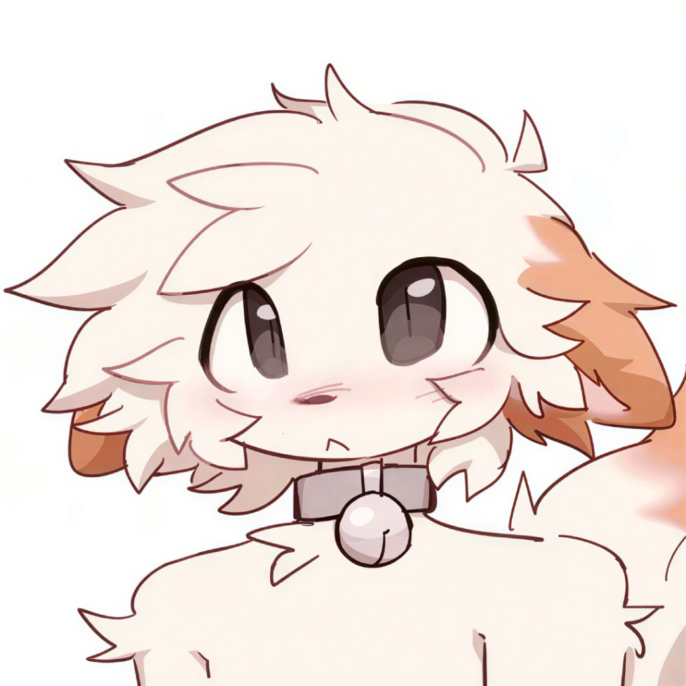

I'm tired of talking to people and then realizing it's not gonna work out, so I'm making this thing. All I really care about is authenticity, honesty and trying to understand the other person, BUT here's some more direction as to who I'm looking for, and who I am. Not a checklist, just direction if you are looking for a partner and want to see if I could be the right one (and if you know someone who might like me you can tell them about me 😭🙏)
I couldn't give two shits what kind of music you listen to, BUT it would be cool if some of the stuff you listen to I also listen to.
Michael Jackson is KING! I only started listening to him after I watched the movie but he's fucking peak and I believe he's innocent and his music is fucking peak, except Chicago which is lowkey buns but other than that, PEAK. And I know he would think furries are cute 🥹 I don't know, to name a few good songs from him: Bad, Billie Jean, Beat It, Thriller, Smooth Criminal, Black or White, They Don't Care About Us.
I also do like some phonk 😭 I do not give a fuck if it's cringe, it's fucking peak. The whole concept of cringe is fucking stupid, if I'm honest. Or should I say that it's cringe? Anyway, I also listen to some "unc ass" songs, songs that my dad also listens to 😭😭😭😭 which might be partially why I like them, but for example, Hall of Fame, Counting Stars, and, I don't think my dad listens to this one but, High Hopes. Also Nope You're Too Late by Wifisfuneral is good, lowkey Industry Baby is good, and white girl songs like Call Me Maybe and You Belong With Me are FUCKING PEAK! Also some more like, rock? Or whatever, songs like I Was Made for Lovin' You, or Burning Heart are good too, or Eye of the Tiger. I don't know, give me any niche of music and just let me listen to it enough and I'll probably start liking it.
Most people who I talk to who are submissive little furry femboys have at least some history of self harm, which I will be discussing now, so tw. I just want to put everything on the table, you know. Well, not EVERYTHING, I do have secrets, but nothing that I feel like a good person wouldn't understand. I haven't hurt anyone or anything, and I'm not going to.
But yeah, so, I've heard some people joke about it, like how they've hurt themselves. What. I don't do that, don't do that. I might in the right group say the occasional "omg I'm gonna kill myself," or something, but like, you know, it's not a topic that should actually be joked about, suicide or self harm. Now, have I done self harm? Technically yes, but only when medications were changing which causes mood swings, and so little that it's not even noticeable, there's no scars or anything. And if you have done self harm that's obviously okay, but a lot of people I talk to are always super weird about it and even like flex about it, do not be like that. Or, if that's who you are then be like that so I know now not to talk to you. But if you're doing so badly mentally that I'm constantly worried if you're gonna kill yourself, that's too much stress for me. And yes, I'm not doing so good mentally in general, but I'm not going to kill myself.
I'm sure this will DRASTICALLY change in the future, but right now I consider myself the most insecure and nervous yet confident person, and also the stupidest smart person, or smartest stupid person? On earth, I don't know. I suck at stuff like, I don't know, nerd stuff like math or biology, but then, I think I'm socially smart? I think I understand people fairly well, and I really want to try to understand people, even if they're super fucked up, I find evil people, well, scary but also kind of fascinating because what the fuck has to happen to a person for them to do that. But I am NOT street smart 😭
I'd love to travel a lot.
Also I don't give a fuck how much it'll cost or how stupid it is, my house will have at least one secret room.
My dream car is probably a Hellcat. I don't know jack shit about cars and I don't care if it drives like shit, it looks cool.